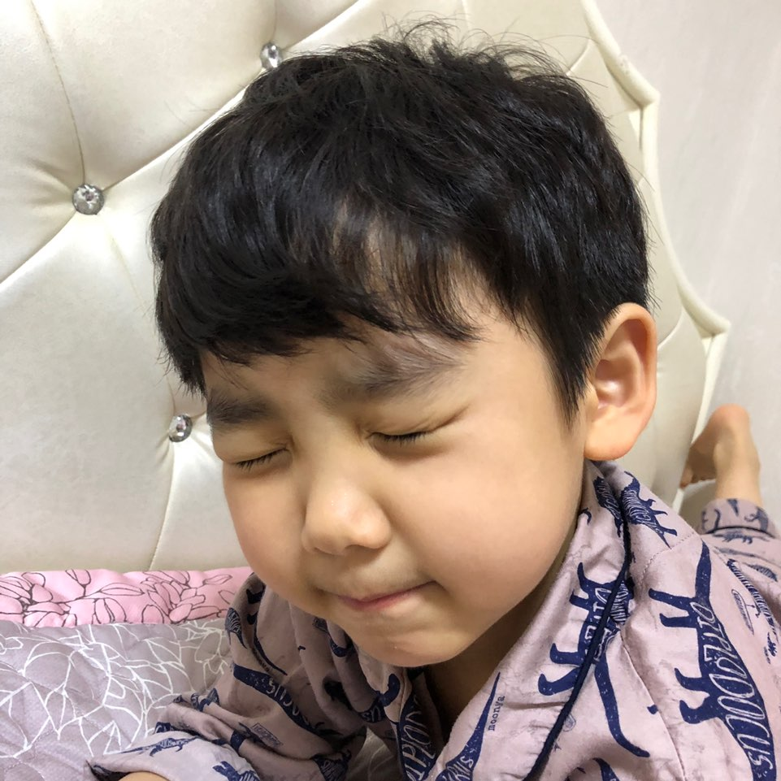

2 0 1 3 . 0 7 . 2 4
닉네임 : 귀염둥이

- 성격 및 특징
- 좋아하는 음식
- 직업
- 좋아하는 사람
좋아하는 음식
단거, 단거, 단거, 단거, 단거...!!!!!!!!!!!
아이스크림, 사탕, 젤리, 초콜릿, 과자... 달달한 간식들은 모두 좋아한답니다.
아이스크림은 바닐라 맛을 제일 좋아해요!
채소를 주면 먹지만, 가끔은 안 먹는 이상한 의진이랍니다 크크.
그렇지만 키가 무럭무럭 자라고, 건강하려면 채소를 골고루 먹어야겠죠?!
의진이는 엄마가 해주는 치킨커틀렛, 오므라이스 등을 좋아해요!
맛있는거 많이 많이 먹고 항상 건강하고 튼튼했으면 좋겠어요 ♥